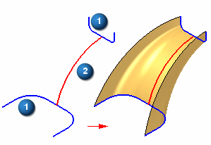

Swept command
Use the Swept surface command  to construct a surface by extruding one or more cross sections (1) along a path you
define (2).
to construct a surface by extruding one or more cross sections (1) along a path you
define (2).

You can define up to three paths and many cross sections. After you define the third path, the command automatically proceeds to the cross section step.
The cross sections can be open or closed and can be planar or non-planar. You can place them anywhere along the path. For predictable results, it is best if the cross sections intersect all paths. The sweep paths can be either tangent or non-tangent.
When you create a swept surface using a closed sketch, you can use the Open Ends and Close Ends options on the command bar to specify whether the ends of the swept surface are open or closed. When you set the Close Ends option, faces are added to the ends of the feature to create a closed volume.
You can select wireframe elements from multiple Parasolid bodies or sketches and the elements will remain associative.